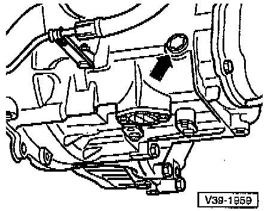

Fluid - M/T: Testing and Inspection

CHECKING
- Remove fill plug for transmission oil inspection (-arrow-).
The oil level is correct if the transmission is filled to the lower edge of the oil filler hole.
- Install fill plug (-arrow-).
NEW FILL
- Fill with transmission oil to lower edge of filler hole.
- Install fill plug (-arrow-).
- Start engine, engage gear and let transmission run approx. 2 minutes.
- Remove fill plug (-arrow-).
- Shut engine off and again add transmission oil to lower edge of filler hole.
- Install fill plug (-arrow-).